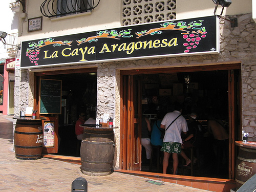

Las temporadas de Benidorm
Todos aquellos que hemos pasado un verano en Benidorm o hemos paseado por esta ciudad, nos hemos dado cuenta que las calles bullen cuando multitud de gente camina como hormigas por todas partes. Además llenan todas las tiendas que existen en Benidorm… ¿y la playa? Pues en la playa para colocar una toalla o una sombrilla y obtener sitio al mediodía hay que luchar como un valiente. Esta situación no es rara ya que en ésta época del año pasa lo mismo en todo el litoral español y zonas turísticas. ¡Qué alegría!
La temporada baja 
Luego llega el otoño y el invierno y aquella aglomeración o multitud de público en el litoral español se reduce a un grupo de residentes que pasea aburrido por los mismos lugares que estuvieron de bote en bote hace unos meses. En Benidorm la situación es diferente porque solamente hay un cambio en las nacionalidades de los visitantes. Antes eran alemanes, suecos, franceses y otros europeos y ahora encontramos españoles como gallegos, asturianos, extremeños, andaluces, etc. ¿Cómo se produce este cambio tan radical? La respuesta es muy sencilla. A través de los años las autoridades de esa ciudad han tenido una exitosa campaña de mercadeo. Además los empresarios locales, es decir los empresarios de Benidorm, han mantenido una oferta atractiva incluyendo precios bajos y buen servicio, para que el turismo nacional pase los inviernos en este bello lugar.
Beneficios
 ¿Quién gana con ésto? Ambas partes ya que “el turismo de casa” se aleja por un tiempo del clima frío de su tierra y los comerciantes de Benidorm no tienen que cerrar sus negocios durante la temporada baja. De este modo se mantiene la empleomanía en Benidorm y por lo tanto en Benidorm hay menos desempleo y más riqueza para la zona.
¿Quién gana con ésto? Ambas partes ya que “el turismo de casa” se aleja por un tiempo del clima frío de su tierra y los comerciantes de Benidorm no tienen que cerrar sus negocios durante la temporada baja. De este modo se mantiene la empleomanía en Benidorm y por lo tanto en Benidorm hay menos desempleo y más riqueza para la zona.
Posibilidades en la Playa San Juan
Y yo me pregunto, ¿No sería buena idea que la Playa San Juan iniciara una campaña parecida? Quizás si contactamos al gobierno solicitando alguna ayuda o tal vez asesoramiento, o si formamos un comité para estudiar esta posibilidad podríamos conseguir los mismos resultados que hoy día tiene Benidorm. El lugar está y las infraestructuras también, solo falta la iniciativa.